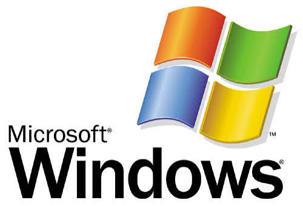

SISTEMA OPERATIVO WINDOWS

Microsoft Windows
es el sistema operativo insignia de Microsoft
. Funciona como el administrador central de tu computadora, gestionando todos los recursos de hardware y software y ofreciendo una interfaz gráfica intuitiva con ventanas, iconos y menús para facilitar el uso diario.
Características Principales:
- Interfaz gráfica de usuario (GUI):
Permite interactuar con la computadora mediante un ratón y un teclado, facilitando la navegación.
- Multitarea avanzada:
Permite ejecutar varios programas al mismo tiempo, organizando el espacio de trabajo con herramientas como Snap Layouts.
- Compatibilidad:
Es compatible con la gran mayoría de programas, periféricos y videojuegos del mercado.
- Seguridad integrada:
Cuenta con Windows Defender y otras herramientas avanzadas para proteger tu equipo contra amenazas cibernéticas.
Versiones Actuales
- Windows 11:
Es la versión más reciente, lanzada en 2021. Destaca por su diseño minimalista, su barra de tareas centrada, mayor integración con Microsoft Teams y un mejor rendimiento para videojuegos.
- Windows 10:
Lanzado en 2015, sigue siendo utilizado por una gran cantidad de usuarios en todo el mundo, aunque su soporte oficial finalizará en octubre de 2025.
- Windows Server:
Orientado a servidores empresariales, enfocado en la gestión de redes, seguridad y almacenamiento a gran escala.
Entre sus funciones clave destacan:
- Interfaz de Escritorio: Incluye el Menú Inicio, la Barra de tareas y el Explorador de archivos para una rápida navegación y organización.
- Asistencia por IA: Integración de Microsoft Copilot para automatizar tareas y resolver dudas directamente en el sistema.
- Seguridad integrada: Protege el equipo mediante antivirus y configuraciones avanzadas de hardware (como el soporte TPM 2.0 en las versiones más modernas).
- Sincronización en la nube: Copia de seguridad y acceso a archivos mediante OneDrive y el ecosistema Microsoft 365.

Da un clic si deas DESCARGAR